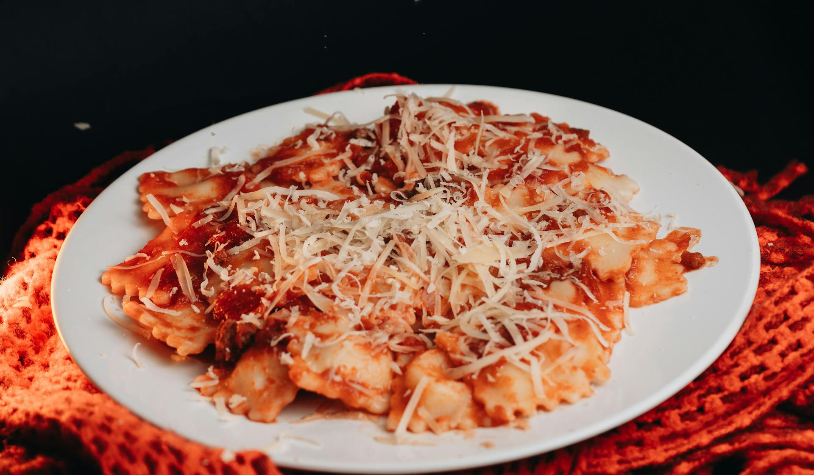
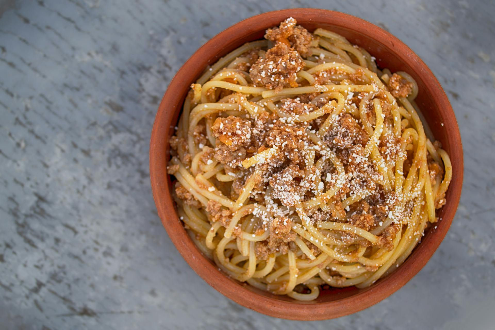
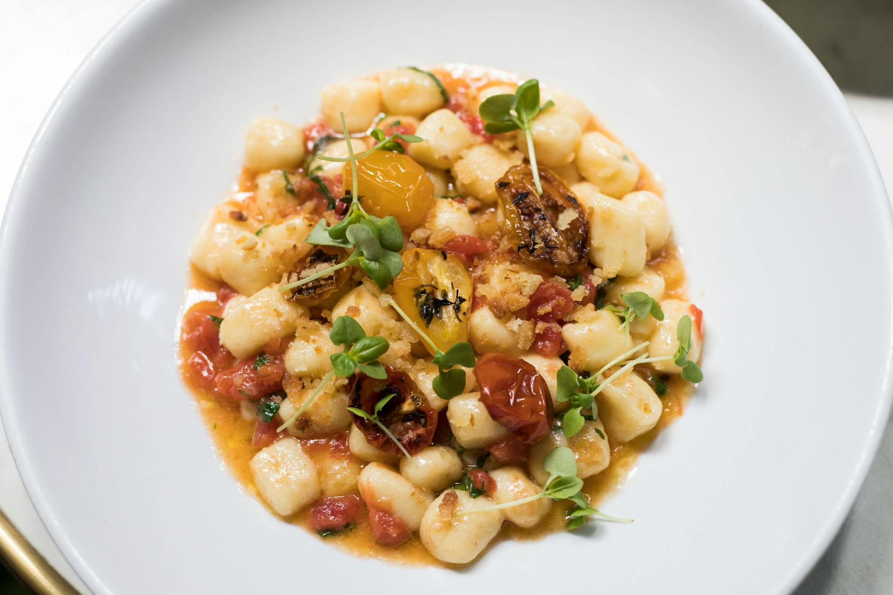
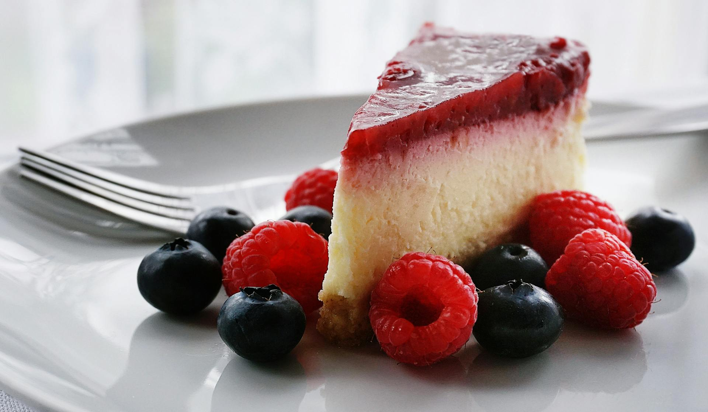

Rigotti's Pastas caseras
Ravioles
Hecho con:
- Ricota
- Masa casera
- Pimienta y sal
- Salsa Bolognesa
- Queso Parmesano Reggiano
Descripción
Es un plato hecho con ricota traida de Roma, acompañado de una salsa bolognesa hecha por la casa. Como aditivo una fuente con queso Parmesano Reggiano
$10.500
Espaguetis
Hecho con:
- Pasta de trigo 100%
- Salsa Alfredo cremosa
- Queso Parmesano rallado
- Albahaca fresca
- Ajo y aceite de oliva
Descripción
Espaguetis cocidos al dente, mezclados con una cremosa salsa Alfredo hecha en casa, con queso parmesano rallado y un toque de albahaca fresca que realza el sabor.
$9.500
Ñoquis
Hecho con:
- Papas frescas
- Harina de trigo
- Huevo de campo
- Salsa Pomodoro casera
- Queso Pecorino rallado
Descripción
Ñoquis suaves hechos a mano con papas frescas y harina, acompañados de una salsa Pomodoro artesanal, terminados con queso pecorino rallado para un sabor auténtico.
$12.000
Cheesecake
Hecho con:
- Queso crema suave
- Base de galletas caseras
- Crema batida
- Esencia de vainilla
- Frutos rojos frescos
Descripción
Delicioso cheesecake cremoso con base de galletas caseras, saborizado con esencia de vainilla y decorado con frutos rojos frescos que aportan un toque fresco y dulce.
$5.999